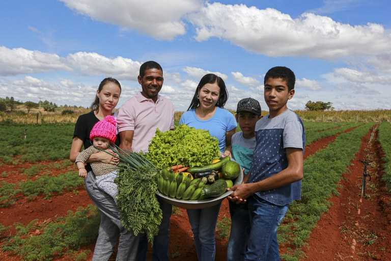
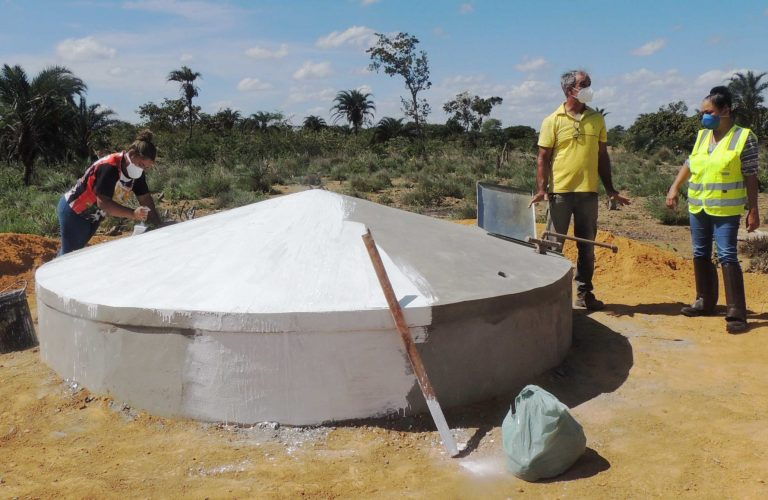
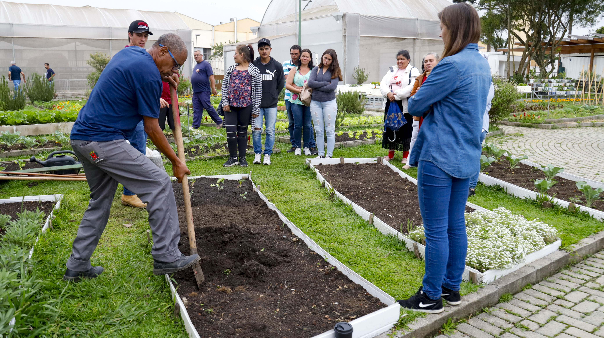
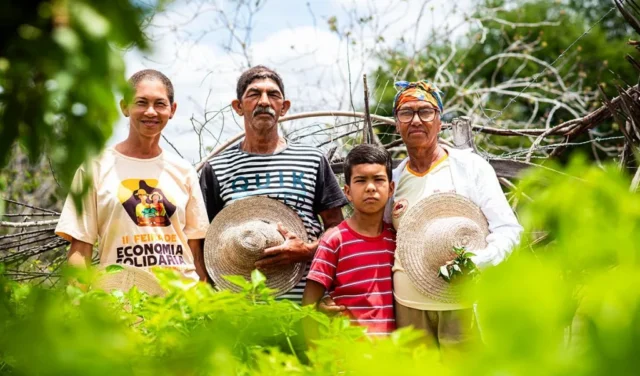

Há 8 anos transformando o sertão
Água, alimento e futuro em Serra Branca
Impulsionamos o desenvolvimento sustentável no sertão de Pernambuco. Juntos, levamos dignidade e oportunidades onde a água é rara.
100% auditado Prestação de contas trimestral e pública.
Selo Amigo do Sertão Reconhecidos por transparência e impacto.
Relatório anual Balanço social e financeiro aberto.





O impacto que você ajuda a gerar
Resultados reais na comunidade de Serra Branca (PE).
Escolha como ajudar
Cada valor tem um impacto direto e mensurável.
As doações ajudam a manter os projetos do Instituto Sertão Vivo,
contribuindo para ações voltadas ao acesso à água, hortas comunitárias
e desenvolvimento da comunidade. Com sua ajuda podemos continuar
transformando vidas e promovendo um futuro mais sustentável para todos.
Água limpa e filtro para 1 família por mês.
ApoiarAlimento e material escolar para 2 crianças.
ApoiarInsumos para a horta comunitária das mulheres.
Apoiar1 cesta básica da agricultura familiar local.
DoarManutenção completa de uma cisterna comunitária.
DoarEscolha quanto deseja doar hoje.
Escolher valorDúvidas frequentes
Minha doação é segura?
Sim. Usamos ambiente criptografado para cartão, boleto ou Pix.
Como acompanho o uso do meu dinheiro?
Enviamos relatórios mensais por e-mail com fotos, vídeos e prestação de contas.
Receba nosso boletim de impacto
Acompanhe mensalmente as novidades e o desenvolvimento da sede em Serra Branca diretamente no seu e-mail.